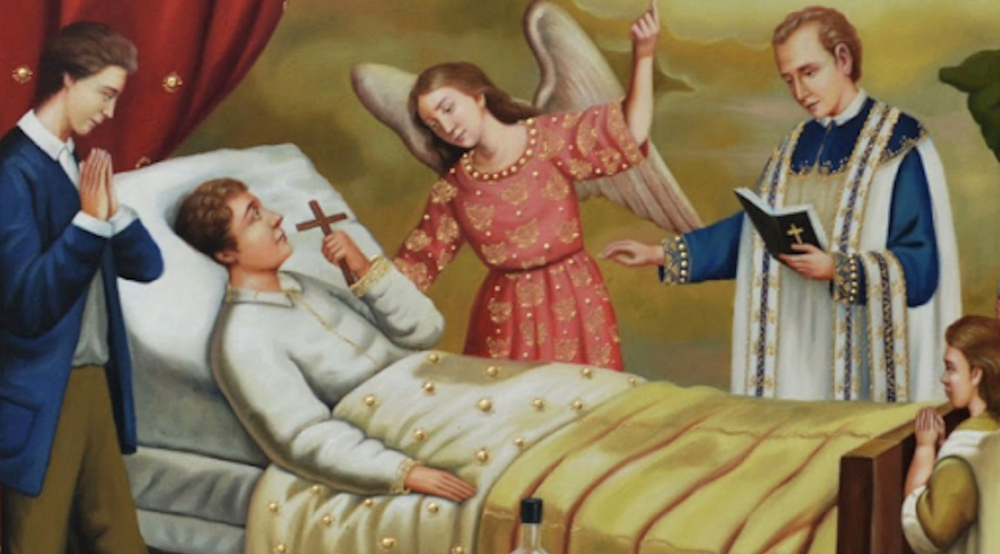

"Si uno de ustedes cae enfermo que llame a los ancianos de la comunidad para que recen por él y lo unjan con aceite invocando el nombre del Señor"
Santiago 5, 14
UNCIÓN DE LOS ENFERMOS, SACRAMENTO DE CURACIÓN
Con la sagrada unción de los enfermos y con la oración de los presbíteros, toda la Iglesia entera encomienda a los enfermos al Señor sufriente y glorificado para que los alivie y los salve. Incluso los anima a unirse libremente a la pasión y muerte de Cristo; y contribuir, así, al bien del Pueblo de Dios
EFECTOS DE LA CELEBRACIÓN DE ESTE SACRAMENTO

Un don particular del Espíritu Santo
- La gracia primera de este sacramento es un gracia de consuelo, de paz y de ánimo para vencer las dificultades propias del estado de enfermedad grave o de la fragilidad de la vejez.
- Esta asistencia del Señor por la fuerza de su Espíritu quiere conducir al enfermo a la curación del alma, pero también a la del cuerpo, si tal es la voluntad de Dios.
La unión a la Pasión de Cristo
- Por la gracia de este sacramento, el enfermo recibe la fuerza y el don de unirse más íntimamente a la Pasión de Cristo: en cierta manera es consagrado para dar fruto por su configuración con la Pasión redentora del Salvador.
Una gracia eclesial
- La Iglesia, en la comunión de los santos, intercede por el bien del enfermo. Y el enfermo, a su vez, por la gracia de este sacramento, contribuye a la santificación de la Iglesia y al bien de todos los hombres por los que la Iglesia sufre y se ofrece, por Cristo, a Dios Padre.
Una preparación para el último tránsito
- Si este sacramento es concedido a todos los que sufren enfermedades y dolencias graves, lo es con mayor razón "a los que están a punto de salir de esta vida".
- La Unción de los enfermos acaba de conformarnos con la muerte y resurrección de Cristo, como el Bautismo había comenzado a hacerlo. Es la última de las sagradas unciones que jalonan toda la vida cristiana.